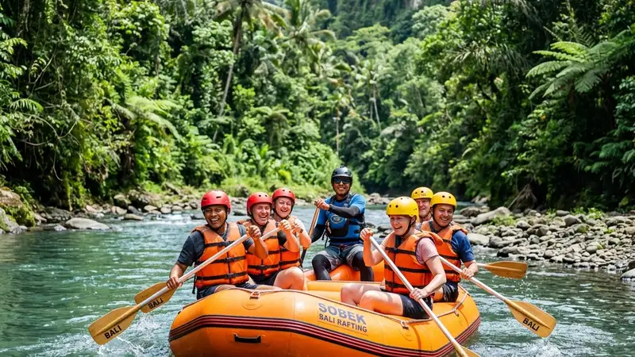

River rafting adalah aktivitas mendayung perahu karet menyusuri sungai berarus deras secara berkelompok dengan dipandu instruktur berpengalaman. Aktivitas ini memadukan olahraga fisik, kerja sama tim, dan sensasi menaklukkan jeram sungai.
- River rafting adalah olahraga air kelompok yang menyusuri jeram sungai menggunakan perahu karet
- Tingkat kesulitan jeram diklasifikasikan dalam skala grade I hingga grade VI
- Perlengkapan wajib meliputi pelampung, helm, dan dayung standar keselamatan
- Pemula disarankan memulai dari jeram grade I sampai III bersama operator bersertifikat
- Menurut data International Rafting Federation, jutaan peserta mengikuti aktivitas rafting terpandu setiap tahun di berbagai negara sejak awal 2020-an
Apa Itu River Rafting?
River rafting adalah kegiatan menyusuri sungai berarus deras menggunakan perahu karet yang didayung bersama oleh sekelompok orang di bawah arahan seorang pemandu atau skipper.
Aktivitas ini pertama kali berkembang sebagai olahraga rekreasi pada pertengahan abad ke-20 dan kini menjadi salah satu bentuk wisata petualangan air paling populer di dunia. Perahu yang digunakan umumnya terbuat dari bahan karet atau PVC yang dirancang tahan benturan batu dan mampu mengapung stabil di atas arus deras.
Dalam praktiknya, setiap peserta memegang dayung dan mengikuti instruksi pemandu untuk menyesuaikan ritme dayungan dengan kondisi jeram yang dilalui. Koordinasi tim menjadi faktor penentu kelancaran dan keselamatan selama perjalanan.
Bagaimana Sejarah Singkat River Rafting?
River rafting berawal dari kebutuhan eksplorasi sungai sebelum berkembang menjadi olahraga rekreasi modern.
Pada awalnya, rakit digunakan sebagai alat transportasi dan eksplorasi sungai oleh penjelajah dan penduduk lokal. Seiring waktu, perahu karet mulai digunakan untuk kebutuhan militer dan penyelamatan, sebelum akhirnya diadaptasi untuk wisata petualangan pada dekade 1970-an. Sejak saat itu, industri rafting berkembang pesat dengan standar keselamatan dan pelatihan pemandu yang semakin terstruktur di berbagai negara.
Apa Manfaat River Rafting bagi Peserta?
River rafting memberikan manfaat fisik, mental, dan sosial sekaligus melalui aktivitas mendayung, kerja sama tim, dan interaksi langsung dengan alam terbuka.
Secara fisik, mendayung perahu melatih kekuatan otot lengan, bahu, dan inti tubuh, sekaligus meningkatkan daya tahan kardiovaskular karena gerakan berulang yang intens saat melewati jeram. Secara mental, aktivitas ini membantu melepas stres karena peserta harus fokus penuh pada momen saat itu, sehingga pikiran teralihkan dari beban rutinitas harian.
Dari sisi sosial, river rafting menuntut kekompakan tim karena setiap dayungan harus selaras. Hal ini menjadikan aktivitas ini populer sebagai kegiatan outbound perusahaan maupun acara kebersamaan keluarga dan komunitas.
Apakah River Rafting Cocok untuk Pemula?
River rafting cocok untuk pemula selama memilih jalur dengan tingkat kesulitan rendah hingga menengah dan didampingi pemandu bersertifikat.
Operator rafting umumnya menyediakan jalur khusus pemula dengan jeram grade I sampai III yang relatif aman namun tetap memberikan sensasi arus deras. Sebelum memulai, peserta biasanya mendapat briefing keselamatan singkat mengenai teknik dayung dasar, posisi duduk, dan prosedur jika perahu terbalik.
Apa Saja Tingkat Kesulitan Jeram dalam River Rafting?
Tingkat kesulitan jeram dalam river rafting diklasifikasikan dalam skala internasional dari grade I hingga grade VI berdasarkan kecepatan arus, ukuran ombak, dan rintangan sungai.
Grade I dan II tergolong ringan dan cocok untuk pemula karena arusnya relatif tenang dengan sedikit riak. Grade III dan IV mulai menantang dengan ombak lebih besar dan memerlukan manuver aktif, sehingga direkomendasikan bagi peserta dengan sedikit pengalaman atau kondisi fisik baik. Grade V tergolong ekstrem dan hanya disarankan bagi peserta berpengalaman, sementara grade VI dianggap terlalu berbahaya untuk kegiatan komersial dan jarang ditawarkan operator wisata.
Klasifikasi ini membantu calon peserta menyesuaikan pilihan jalur dengan kemampuan fisik dan pengalaman yang dimiliki sebelum memesan trip.
Perlengkapan Apa Saja yang Wajib Digunakan Saat River Rafting?
Perlengkapan wajib river rafting meliputi pelampung, helm pelindung kepala, dan dayung sesuai standar keselamatan yang disediakan operator.
Pelampung atau life jacket berfungsi menjaga peserta tetap mengapung apabila terjatuh ke air, sementara helm melindungi kepala dari benturan batu atau sisi perahu saat melewati jeram. Selain dua perlengkapan utama tersebut, peserta juga disarankan mengenakan sepatu tertutup yang tidak licin serta pakaian cepat kering agar tetap nyaman selama aktivitas berlangsung.
Operator profesional umumnya menyediakan seluruh perlengkapan ini dan memastikan ukurannya sesuai dengan tubuh peserta sebelum keberangkatan, karena kesalahan ukuran pelampung dapat mengurangi efektivitas perlindungan.
Apakah Perlu Membawa Perlengkapan Sendiri?
Peserta umumnya tidak perlu membawa perlengkapan utama sendiri karena operator sudah menyediakan pelampung, helm, dan dayung standar.
Namun demikian, peserta disarankan membawa pakaian ganti, handuk, serta tas kedap air untuk menyimpan barang pribadi seperti ponsel dan dompet selama trip berlangsung, mengingat barang elektronik berisiko rusak terkena air.
Apa Saja Faktor yang Mempengaruhi Keamanan River Rafting?
Faktor utama keamanan river rafting meliputi kualitas pemandu, kondisi cuaca dan debit air sungai, serta kepatuhan peserta terhadap instruksi keselamatan.
Pemandu bersertifikat memiliki kemampuan membaca kondisi jeram dan mengambil keputusan cepat saat situasi darurat, sehingga menjadi faktor paling menentukan dalam menjaga keselamatan rombongan. Kondisi cuaca seperti hujan deras dapat meningkatkan debit air secara mendadak dan mengubah tingkat kesulitan jeram, sehingga operator yang bertanggung jawab akan menunda atau membatalkan trip jika kondisi dinilai berbahaya.
Kepatuhan peserta terhadap instruksi, seperti posisi duduk yang benar dan cara merespons saat perahu oleng, juga sangat memengaruhi tingkat risiko kecelakaan selama aktivitas berlangsung.
Apa yang Harus Dilakukan Jika Terjatuh dari Perahu?
Peserta yang terjatuh dari perahu disarankan tetap tenang, mengapung dengan posisi kaki menghadap ke hilir, dan mengikuti arahan pemandu untuk kembali naik ke perahu.
Posisi mengapung dengan kaki di depan membantu peserta menghindari benturan langsung kepala atau tubuh dengan batu di dasar sungai. Pemandu dan kru pendamping biasanya sudah terlatih untuk segera menarik peserta kembali ke perahu menggunakan tali atau dayung dalam waktu singkat.
Kesalahan Umum Apa Saja yang Sering Dilakukan Peserta Pemula?
Kesalahan umum peserta pemula meliputi tidak mengenakan pelampung dengan benar, mengabaikan briefing keselamatan, dan panik berlebihan saat perahu oleng.
Selain itu, banyak pemula yang memilih jalur dengan tingkat kesulitan terlalu tinggi tanpa mempertimbangkan kondisi fisik, sehingga mudah kelelahan di tengah perjalanan. Kesalahan lain adalah tidak mengamankan barang bawaan sehingga berisiko hilang atau rusak terkena air selama trip berlangsung.
Menghindari kesalahan ini dapat dilakukan dengan mendengarkan briefing secara saksama, memilih jalur sesuai kemampuan, dan selalu mengikuti arahan pemandu di sepanjang perjalanan.
Bagaimana Cara Memilih Operator River Rafting yang Aman?
Operator river rafting yang aman dapat dikenali dari sertifikasi pemandu, kelengkapan alat keselamatan, dan reputasi yang baik dari ulasan peserta sebelumnya.
Calon peserta disarankan menanyakan status sertifikasi pemandu serta memastikan operator memiliki prosedur evakuasi darurat yang jelas. Kondisi fisik perahu dan perlengkapan keselamatan juga perlu diperiksa, termasuk memastikan pelampung dan helm dalam kondisi layak pakai tanpa kerusakan.
Ulasan dari peserta sebelumnya dapat menjadi indikator tambahan mengenai kualitas layanan, ketepatan waktu, dan tingkat keramahan kru operator selama trip berlangsung.
FAQ
Apa itu river rafting?
River rafting adalah aktivitas mendayung perahu karet menyusuri jeram sungai secara berkelompok dengan dipandu instruktur bersertifikat.
Apakah river rafting aman untuk pemula?
River rafting aman untuk pemula selama memilih jalur grade I sampai III dan mengikuti seluruh instruksi keselamatan dari pemandu.
Apa saja perlengkapan wajib saat river rafting?
Perlengkapan wajib meliputi pelampung, helm pelindung kepala, dan dayung standar yang biasanya sudah disediakan oleh operator.
Arya
penulis artikel yang sudah berpengalaman di dalam dunia wisata outbound Batu Malang.